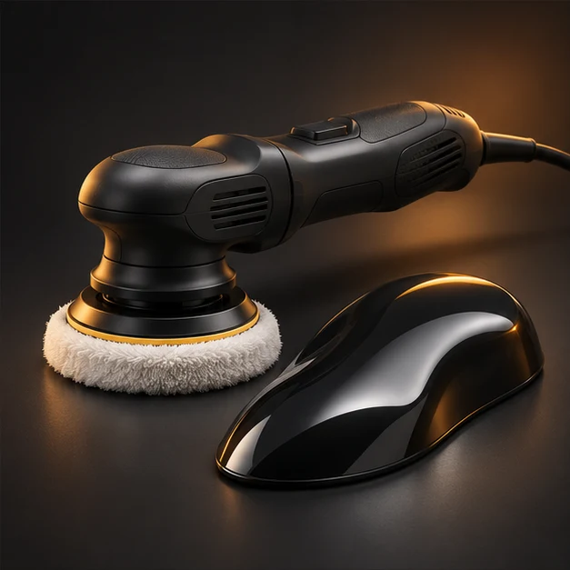
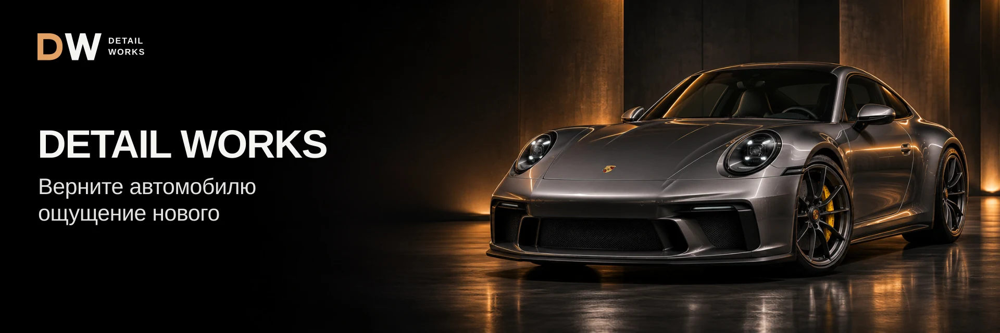
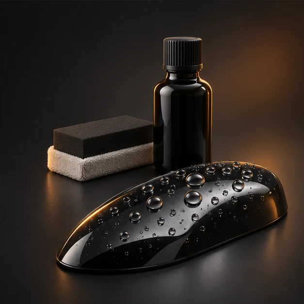
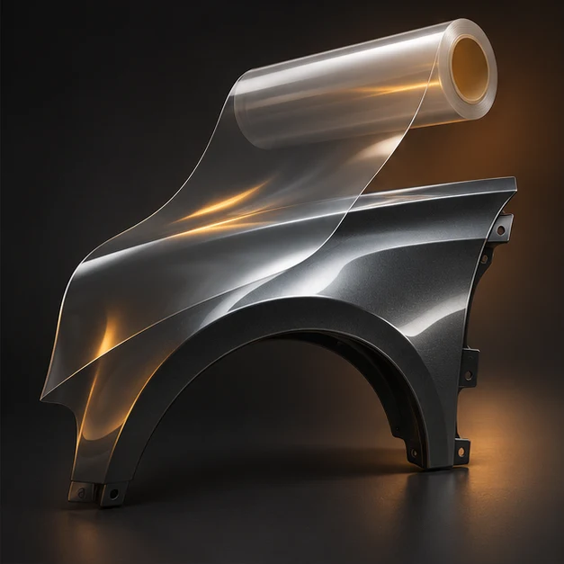
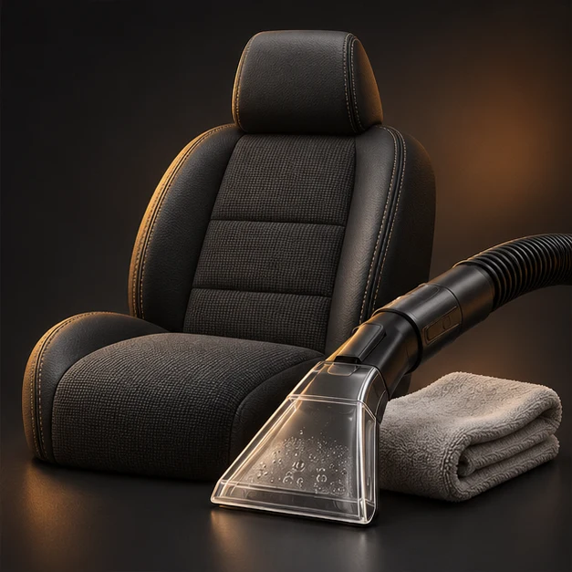
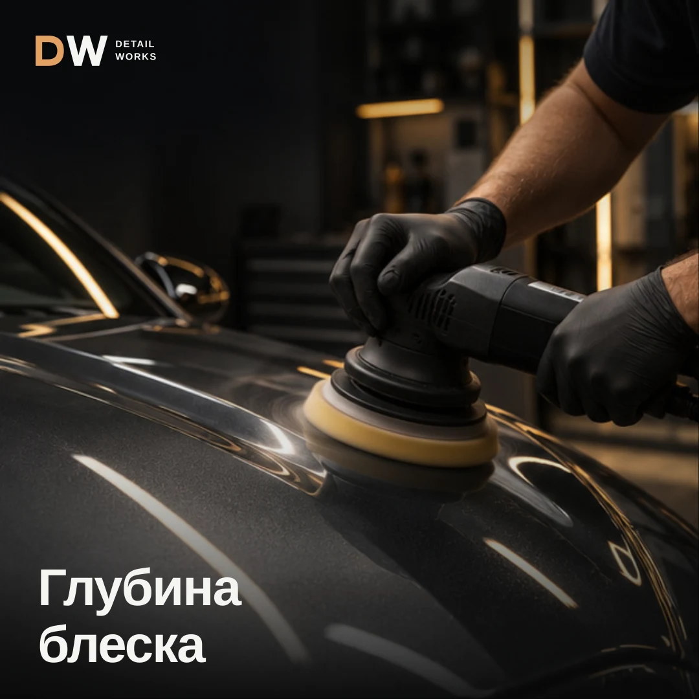
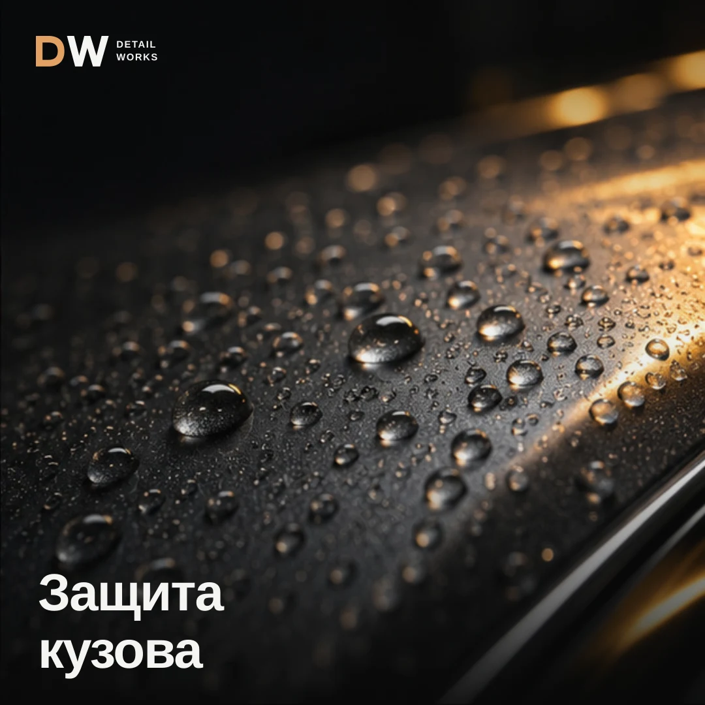
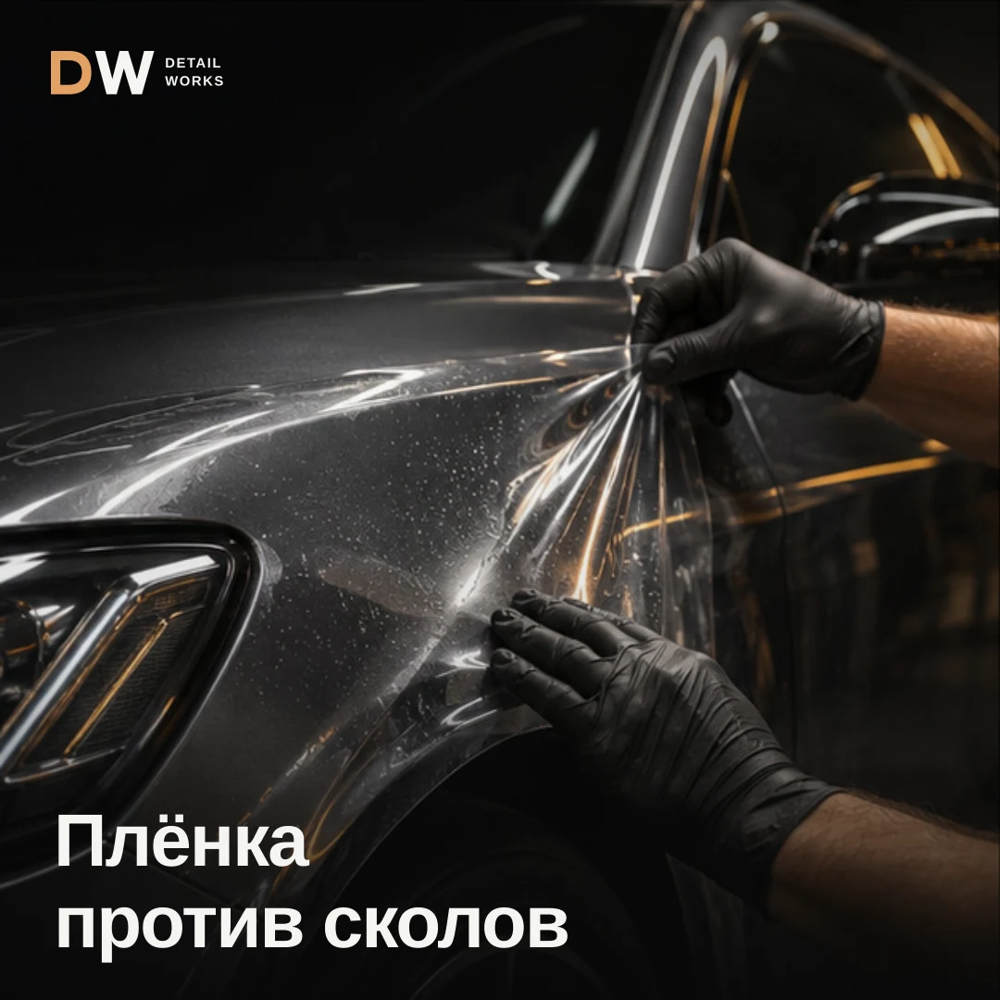
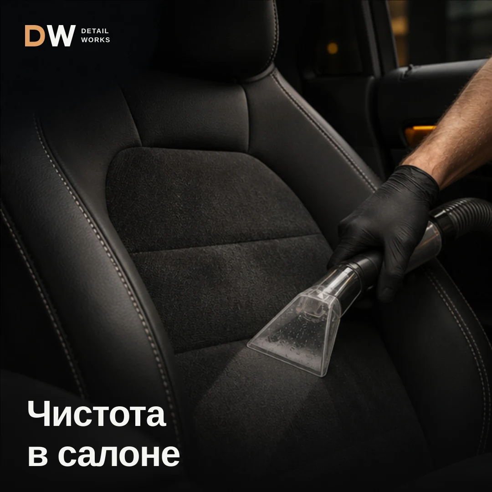
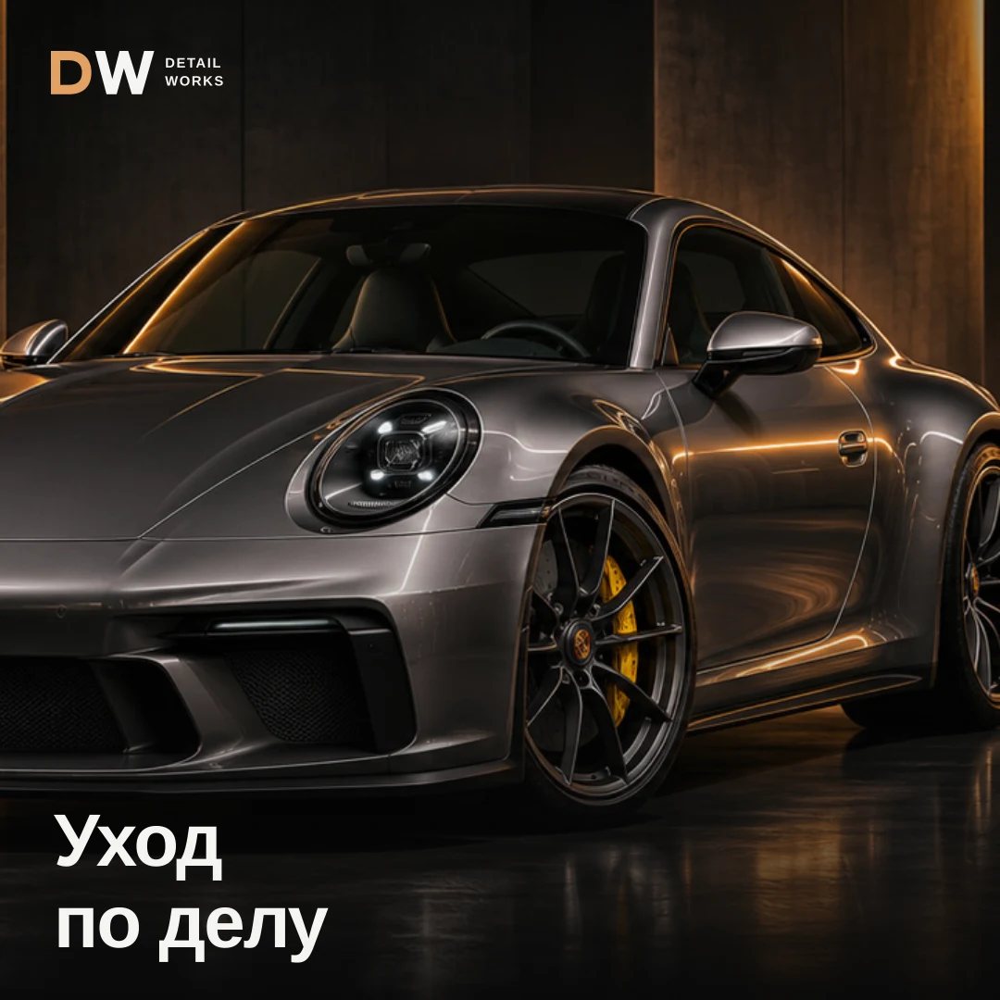

Полировка кузова
Коррекция мелкой риски и восстановление блеска.
от 14 900 ₽DETAIL WORKS / ВКОНТАКТЕ
Визуальная система, каталог услуг и контент для студии детейлинга.

Единая серия 3D-рендеров для каталога. Описание и цена — отдельно от изображения.

Коррекция мелкой риски и восстановление блеска.
от 14 900 ₽
Защита подготовленного покрытия и более простой уход.
от 19 900 ₽
Защита уязвимых зон кузова.
от 24 900 ₽
Очистка отделки с учётом материалов.
от 9 900 ₽Полноценные тексты о работе студии — от проблемы владельца автомобиля до подходящего решения.

На солнце или под ярким светом кузов часто выглядит совсем не так, как после мойки. Мелкая круговая риска, следы от губок и лёгкая матовость делают цвет менее насыщенным.
Полировка помогает уменьшить заметность таких дефектов и восстановить глубину отражения. Перед работой оцениваем состояние лакокрасочного покрытия: не каждая царапина требует агрессивной обработки. Подбираем подходящий состав и степень коррекции отдельно для автомобиля.
Хотите понять, нужна ли вашему авто полировка? Напишите в сообщения сообщества, приложите фото кузова при дневном свете — подскажем, с чего начать.

Если автомобиль быстро покрывается пылью, а после каждой мойки приходится долго удалять разводы, стоит задуматься о защитном покрытии. Керамический состав формирует гидрофобную поверхность: вода собирается в капли, а регулярный уход становится проще.
Важно помнить, что керамика не заменяет защитную плёнку и не спасает от серьёзных сколов. Её задача — облегчить уход, помочь сохранить внешний вид и подчеркнуть блеск подготовленного кузова.
Хотите подобрать защиту под свой автомобиль и условия эксплуатации? Напишите в сообщения сообщества. Расскажите, как часто ездите и где храните машину — предложим подходящий вариант.

Капот, передний бампер, зеркала и крылья принимают на себя большую часть дорожных загрязнений и мелких камней. Особенно это заметно после поездок по трассе.
Прозрачная полиуретановая плёнка помогает сохранить покрытие в наиболее уязвимых местах. Не обязательно оклеивать весь автомобиль: можно начать с зон, которые чаще всего страдают при вашем стиле эксплуатации. Перед монтажом поверхность нужно тщательно подготовить, чтобы плёнка легла аккуратно.
Хотите узнать, какие элементы стоит защитить именно на вашей машине? Напишите в сообщения сообщества, укажите марку и модель — обсудим варианты и предварительную стоимость.

Даже при регулярной уборке в салоне постепенно накапливаются пыль, загрязнения в швах, следы обуви и пятна на сиденьях. Обычный пылесос убирает только часть проблемы.
При химчистке важно учитывать материалы: ткань, кожа, пластик и потолок требуют разных методов и составов. Начинаем с осмотра, затем подбираем безопасную для отделки последовательность очистки. После работы даём рекомендации по уходу, чтобы аккуратный вид сохранялся дольше.
Если салон уже просит обновления, напишите в сообщения сообщества. Пришлите несколько фотографий сидений и проблемных зон — подскажем, какой объём работ нужен.

Не обязательно сразу выбирать самый дорогой комплекс детейлинга. Иногда автомобилю достаточно коррекции отдельных участков кузова или тщательной очистки салона, а в других случаях полезно сочетать полировку и защиту.
Начинаем с того, что действительно важно владельцу: восстановить блеск, защитить кузов от повседневных повреждений, убрать загрязнения или подготовить машину к сезону. После осмотра определяем приоритеты, согласуем работы, сроки и стоимость.
Не знаете, какая услуга подойдёт вашему автомобилю? Напишите в сообщения сообщества, расскажите о задаче и приложите фото. Поможем разобраться без лишних услуг.